Effects, synths & tools
Free and open-source JUCE plugins for synthesis, spatial audio, rhythm and studio utility. Built and maintained on GitHub.
These are part of the toolkit behind the records released here.
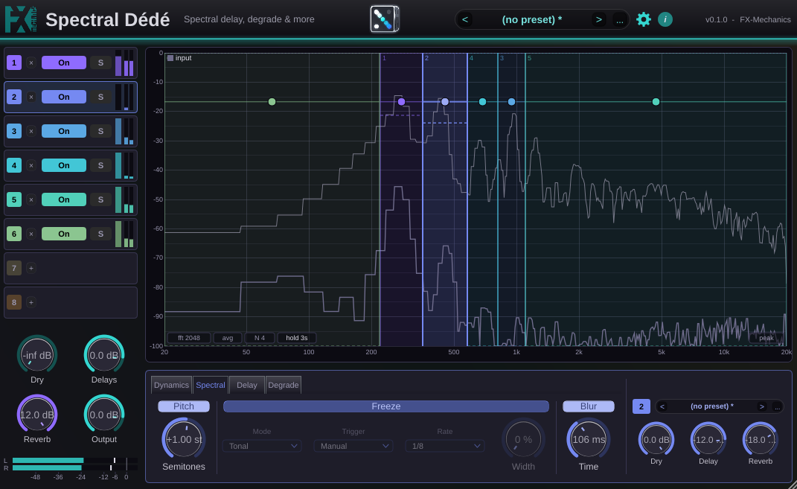
Spectral Dédé is a spectral multi-delay, degrader and reverb. It shows the spectrum of the incoming signal and lets you draw up to eight rectangles on it. Each rectangle is a frequency band whose height matters: the bottom edge is a gate, the top edge a ceiling, so a region drawn high keeps only the peaks (the notes of a melody) and one drawn low keeps only what lies under them (the noise, the room, the breath). Each region runs through its own strip: spectral dynamics, pitch shift, freeze and blur, a stereo delay synced to seconds, the host tempo or the last MIDI note, a saturation / bit-crush / frequency-shift chain that can sit inside the feedback loop, and a send to a shared reverb. A zero-latency Live engine turns it into a classic multiband effect when latency matters.
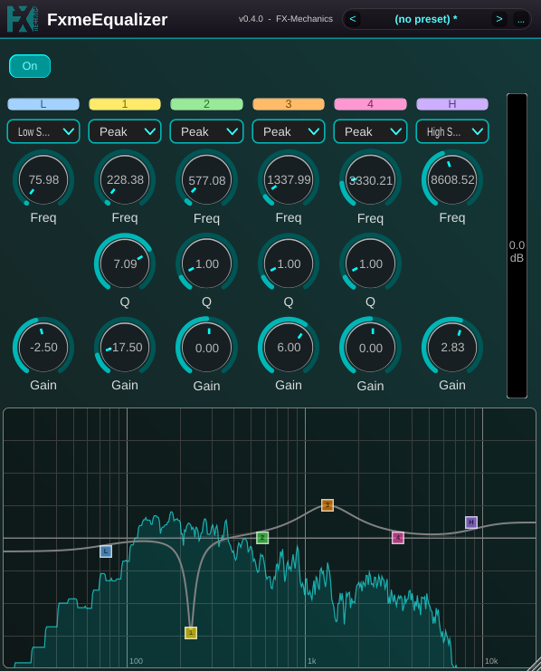
FxmeFX is a collection of 13 classic effects: compressor, six-band parametric equalizer with spectrum display, tube saturation, transient designer, stereo delay (free, tempo-synced or locked to the last MIDI note), convolution reverb, cabinet IR loader, octaver, look-ahead limiter, spectral freeze, chorus, flanger and phaser. Each one comes with factory presets and a preset bar for your own. Available as VST3, AU, Standalone and Pure Data externals.
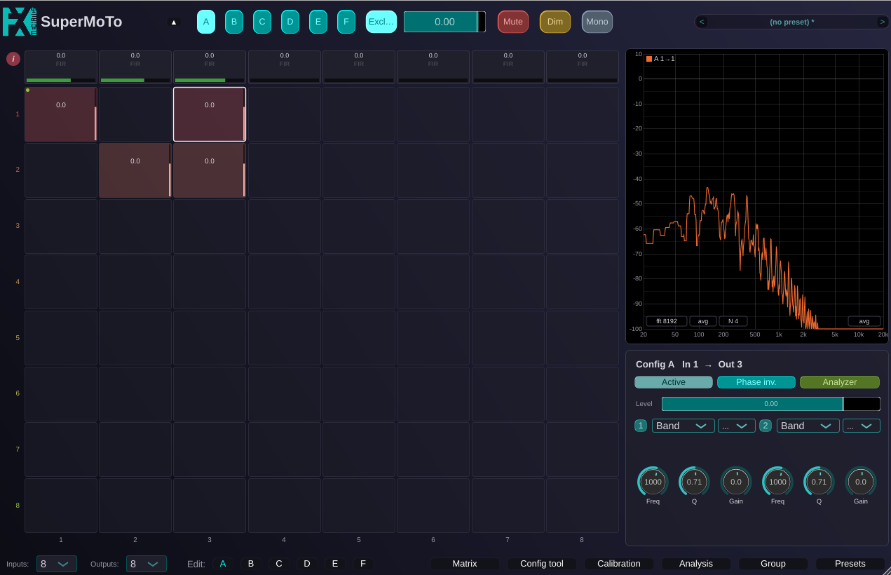
SuperMoTo (The Super Monitoring Tool) puts a studio's monitoring signal chain into one plugin instance. Route up to 32 inputs to 32 outputs through a full matrix with per-crosspoint gain, EQ and polarity, apply per-output trim, EQ, time-alignment delay and zero-latency FIR room correction filters with automatic inter-output latency compensation, measure loudspeakers, align subwoofers phase-coherently, and decode Ambisonics up to 3rd order.
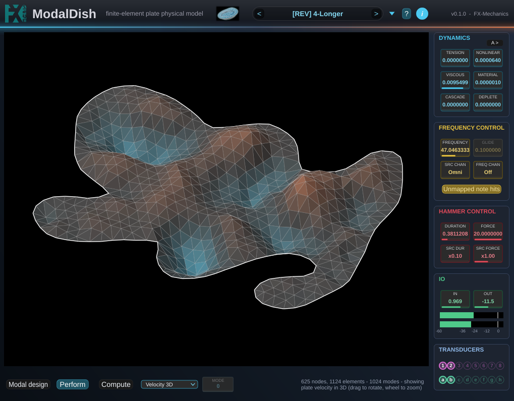
ModalDish is a physical model of a plate of arbitrary shape, solved by finite elements. Draw an outline, set a boundary condition on each edge segment, and it computes the plate's eigenmodes and turns them into a bank of resonant filters, nothing sampled, nothing convolved. Play it as an instrument by striking it with the mouse or MIDI, or feed it audio and use it as an effect. Two cheap geometric nonlinearities (a dynamic tension that bends pitch up on a hard hit, and a cubic cascade that carries energy into shimmer) add character without the cost of solving the full nonlinear plate equations.
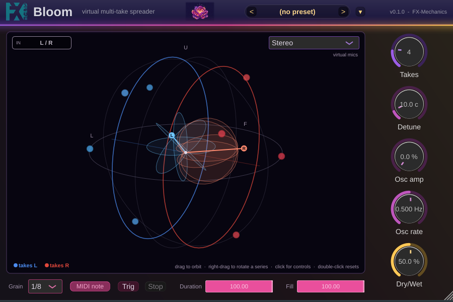
Bloom turns a single take into a cloud of virtual ones: each take gets its own detune and sits somewhere on the sphere around the listener, in two independent series steered by azimuth, elevation and spread. The result is rendered either as a stereo pair of virtual microphones with selectable polar patterns, or as a 1st- to 3rd-order ambisonic stream (AmbiX, ACN/SN3D). A grain mode has the takes capture and loop slices of the incoming audio round-robin, and those grain steps can be driven by held MIDI notes, turning the cloud into a pitch-locked oscillator bank voicing whatever chord you play.
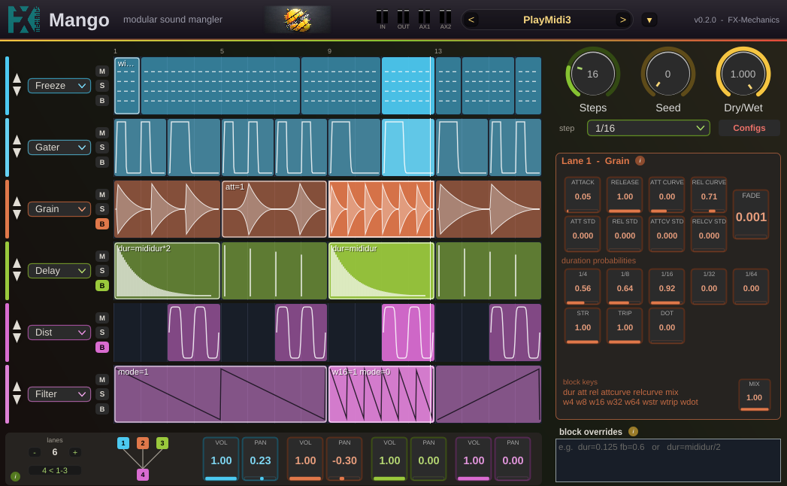
Mango is a modular sound glitcher: route audio through a chain of step-sequenced lanes (gater, grain, delay, distortion, filter, quantizer) where each step can carry its own settings and probabilities. Randomized seeds and per-step duration/curve controls turn static loops into constantly mutating, glitchy textures.
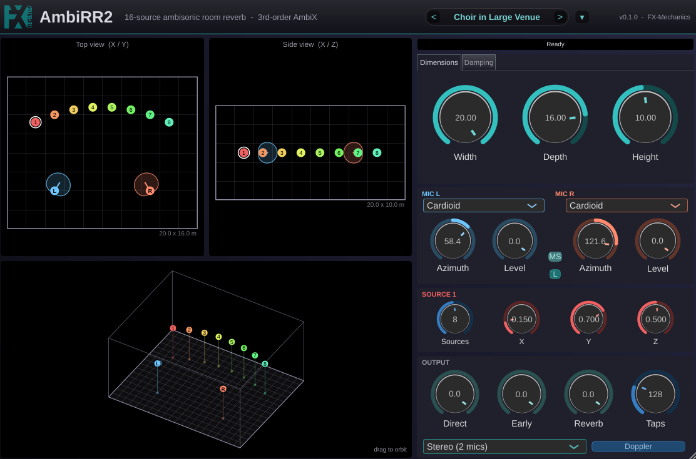
AmbiRR2 places up to 16 mono sources in a virtual box-shaped room and renders the space as either a 1st-, 2nd- or 3rd-order ambisonic stream (AmbiX, ACN/SN3D) or a stereo recording from two virtual microphones with selectable polar patterns. It's a full rewrite of the earlier BiRR/AmbiRR with a realtime-safe, thread-aware architecture: the direct sound and early reflections come from an exact per-source image-source model, while the late reverberation is a single diffuse field shared by every source. Moving a source or the listener never rebuilds the impulse response, so both can be automated freely in the DAW.
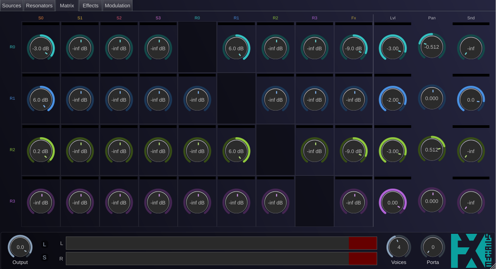
MechanOdd is a polyphonic physical-modelling synthesizer that synthesizes sound by exciting simulated mechanical resonators (strings, plates, membranes and beams) and routing the results through a feedback matrix, effects chains and a modulation engine. It's the new, more powerful and modular successor to StrinGO.
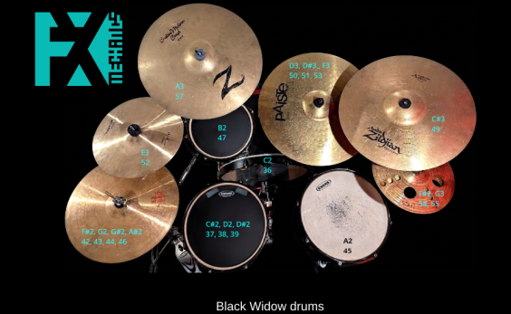
The Black Widow Drums project is the first published drum sampler showcase for FxmeSampler's advanced spatial and processing features. Recorded on a Gretsch Black Widow kit, it uses an original microphone array and signal-processing chain to deliver a studio-ready drum sound.
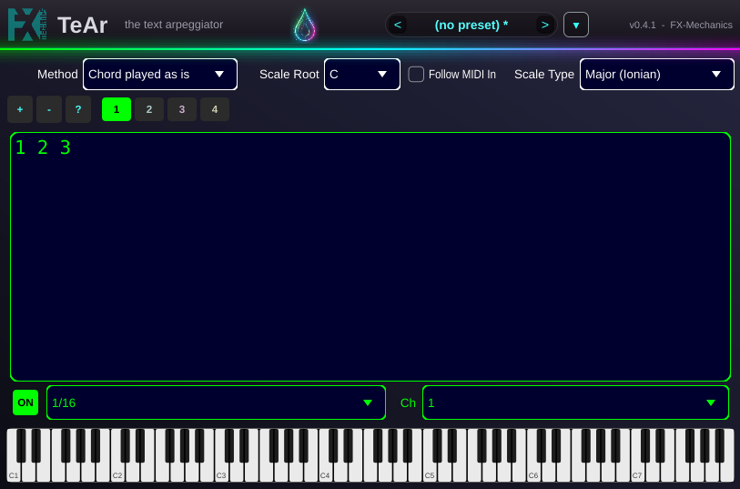
TeAr is an advanced polyrhythmic and polyphonic MIDI arpeggiator plugin. It features any number of independent arpeggiator engines, each with its own pattern, subdivision and MIDI output channel, enabling complex, evolving musical phrases and textures.
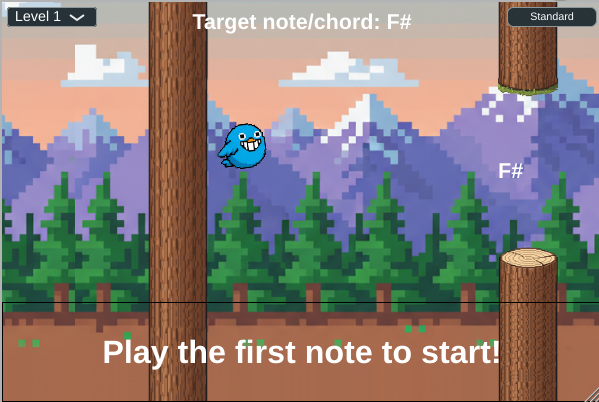
Flappy Chord is a simple prototype of a musical game that reimagines the classic "Flappy Bird" formula as a fun tool for learning music. The bird is controlled by playing notes and chords on a connected MIDI keyboard.
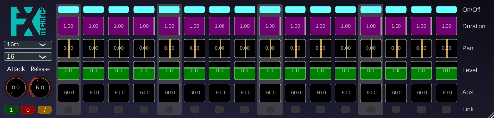
RhyGa is a simple yet versatile rhythmic gate effect for your DAW. It creates tempo-synced patterns by modulating the volume of an incoming audio signal. With per-step controls for level, pan, duration and an auxiliary send, it turns static pads into pulsating rhythms, adds stutter effects on vocals, or dynamic movement to any track.
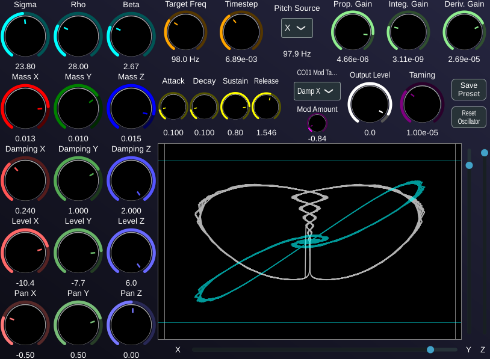
Lorenz is a unique software synthesizer that generates sound by simulating a modified version of the Lorenz attractor, a classic chaotic system. Instead of traditional oscillators, it uses the evolving state of the attractor to create complex, ever-changing, organic sounds.
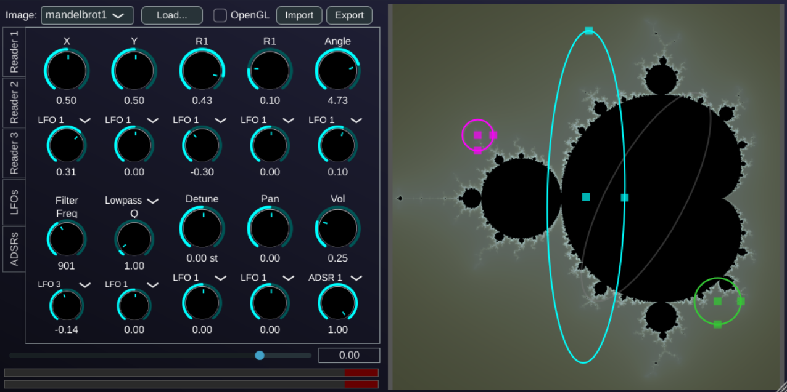
Image-In is a virtual instrument based on an image buffer read by oscillators that follow a path across the image. LFOs and envelopes can modulate the path, and user images can be imported for even more sonic possibilities.
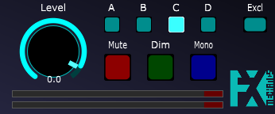
MoTo (Monitoring Tool) sits after the master track in your DAW to mimic hardware monitor controllers. It lets you switch between four stereo outputs and has mute/dim/solo buttons. Designed with Reaper in mind, but useful in other DAWs too.
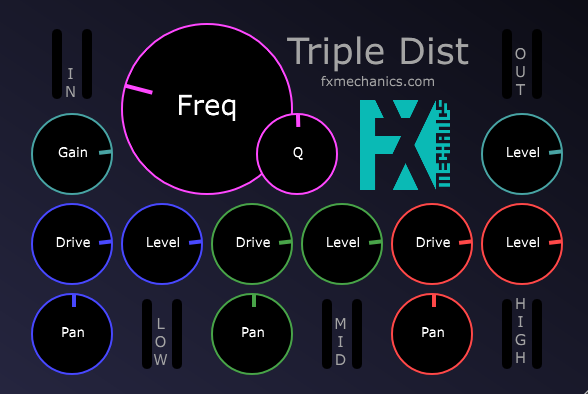
A filter/distortion plugin. The signal is split into three frequency bands (low, mid, high) via a state-variable filter. Each band is distorted and panned separately before being mixed back together, creating interesting spatialization effects as the cutoff frequency is varied.
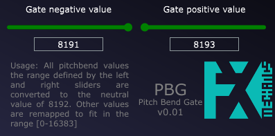
PiWheeG (Pitch Wheel Gate) is a MIDI effect plugin that fixes a common problem with some hardware MIDI keyboards whose pitch wheel doesn't return exactly to zero.
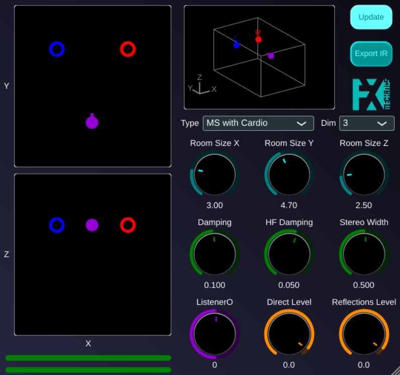
BiRR (and her ambisonic sister AmbiRR) were room simulators that emulated the sound produced by two monophonic sources perceived by a listener in a rectangular (2D) or parallelepipedic (3D) room, with adjustable room and source/listener positions, and stereo or first-order ambisonic output. Superseded by AmbiRR2, a full rewrite supporting up to 16 sources and 3rd-order ambisonic output: new projects should use that instead.
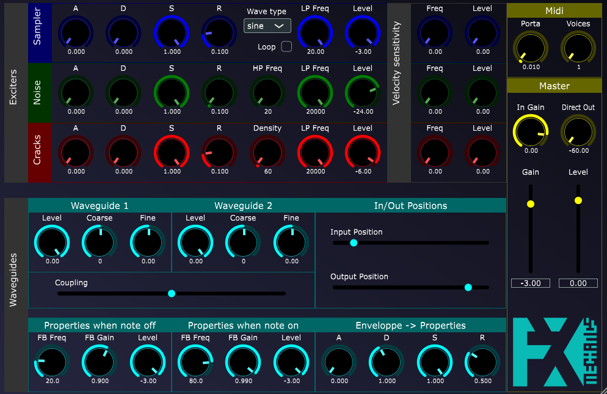
StrinGO is a virtual instrument based on coupled waveguide models. These waveguides can be excited by four kinds of exciters: an external input, a basic waveform oscillator, white noise, and a crackling sound generator. Superseded by MechanOdd, a more powerful and modular successor: new projects should use that instead.